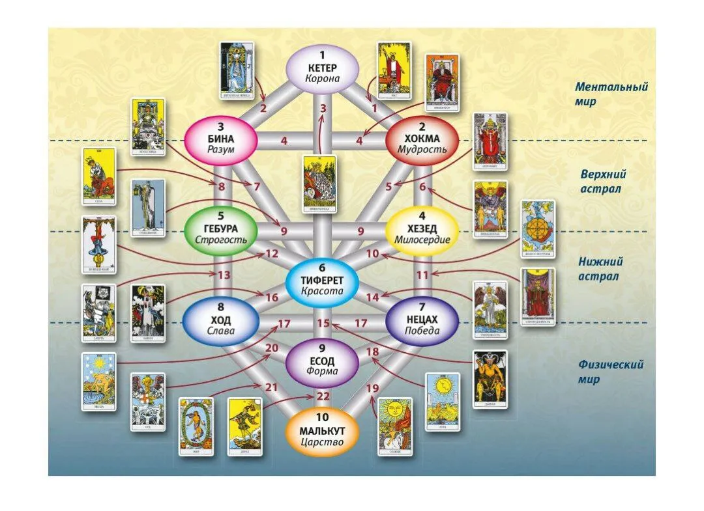
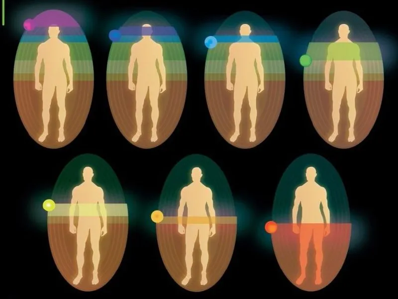
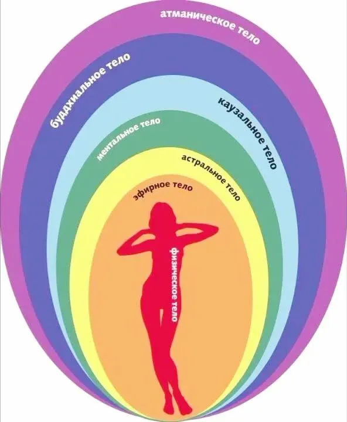
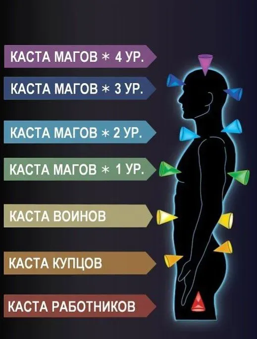

<!-- Оптимизированные изображения для мобильных с правильными размерами -->

<!-- Hero images - оптимизированные под мобильные контейнеры -->
<picture>
  <source srcset="img/mobile/5296603349773916432-mobile.webp" type="image/webp" media="(max-width: 768px)">
  <source srcset="img/5296603349773916432.webp" type="image/webp" media="(min-width: 769px)">
  
</picture>

<picture>
  <source srcset="img/mobile/5296603349773916843-mobile.webp" type="image/webp" media="(max-width: 768px)">
  <source srcset="img/5296603349773916843.webp" type="image/webp" media="(min-width: 769px)">
  
</picture>

<picture>
  <source srcset="img/mobile/5296603349773916438-mobile.webp" type="image/webp" media="(max-width: 768px)">
  <source srcset="img/5296603349773916438.webp" type="image/webp" media="(min-width: 769px)">
  
</picture>

<picture>
  <source srcset="img/mobile/5296603349773916837-mobile.webp" type="image/webp" media="(max-width: 768px)">
  <source srcset="img/5296603349773916837.webp" type="image/webp" media="(min-width: 769px)">
  
</picture>

<picture>
  <source srcset="img/mobile/5296603349773916415-mobile.webp" type="image/webp" media="(max-width: 768px)">
  <source srcset="img/5296603349773916415.webp" type="image/webp" media="(min-width: 769px)">
  
</picture>

<picture>
  <source srcset="img/mobile/5298855149587602076-mobile.webp" type="image/webp" media="(max-width: 768px)">
  <source srcset="img/5298855149587602076.webp" type="image/webp" media="(min-width: 769px)">
  
</picture>

<!-- Carousel images - оптимизированные под мобильные контейнеры -->
<picture>
  <source srcset="img/mobile/5296603349773916465-mobile.webp" type="image/webp" media="(max-width: 768px)">
  <source srcset="img/5296603349773916465.webp" type="image/webp" media="(min-width: 769px)">
  
</picture>

<picture>
  <source srcset="img/mobile/5296603349773916730-mobile.webp" type="image/webp" media="(max-width: 768px)">
  <source srcset="img/5296603349773916730.webp" type="image/webp" media="(min-width: 769px)">
  
</picture>

<picture>
  <source srcset="img/mobile/5296603349773916758-mobile.webp" type="image/webp" media="(max-width: 768px)">
  <source srcset="img/5296603349773916758.webp" type="image/webp" media="(min-width: 769px)">
  
</picture>

<picture>
  <source srcset="img/mobile/5359580824602349141-mobile.webp" type="image/webp" media="(max-width: 768px)">
  <source srcset="img/5359580824602349141.webp" type="image/webp" media="(min-width: 769px)">
  
</picture>

<picture>
  <source srcset="img/mobile/5296603349773916868-mobile.webp" type="image/webp" media="(max-width: 768px)">
  <source srcset="img/5296603349773916868.webp" type="image/webp" media="(min-width: 769px)">
  
</picture>

<!-- Logo - оптимизированный под все размеры -->
<picture>
  <source srcset="img/mobile/5296603349773916388-16.webp" type="image/webp" media="(max-width: 768px)">
  <source srcset="img/mobile/5296603349773916388-32.webp" type="image/webp" media="(min-width: 769px)">
  
</picture>
